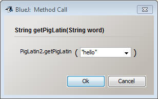
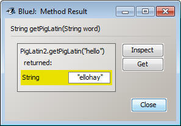

Converting to Pig Latin
This project will have you creating 5 similar
programs, but enhancing them with each phase:
Phase 1: Convert one word to Pig Latin
Phase 2: Convert one word to Pig Latin using a helper method
Phase 3: Converting two words to Pig Latin
Phase 4: Converting many words to Pig Latin using three helper methods
Phase 1:
Write a program named PigLatin1, which takes in a single word String from the
user and prints out the pig-latin version of it. For those that don’t know how
to speak pig latin, the first letter is moved to the back of the word, and then
it attached an “ay” to the end. For example, Hello becomes ellohay
In reality this only works for words that start with a
consonant and then a vowel, but the other rules require a little more knowledge
of programming than we currently have so we’re going to pretend that it works.
Please enter a word:
Sacco
In pig latin that word is accosay
Phase 2:
Now that you know how to modify a one word String to be in pig latin, we’re
going to make it so that it works for a multi-word String.
Create a new class named PigLatin2. This class should
have TWO methods in it:
public static void main()
public static String getPigLatin(String word)
The second method is different than what we’re used
to. For one, there’s a variable named word in the parentheses. This is known as
the parameter of the method. The purpose of this method is to take whatever
String is in word (we don’t know what it’s going to be) and figure out what the
pig latin version of it is.
Complete the getPigLatin method. Its code will be similar to how you worked in phase
1, so use it for inspiration, but here are some key differences to work out:
1) Don’t do ANY Scanner/JOptionPane. Treat the
parameter word as if it came directly from the user. The user input will
come in later.
2) Don’t System.out.println the result. This method’s
job is to RETURN a String, so store the result in a variable named
pigVersion
and then make the following line the last bit of your program:
return pigVersion;How to test:


String pig = getPigLatin(result);3) Now use a System.out.println to print out “In pig latin that word is _____”, using the pig variable.
public static void main() public static String getPigLatin(String word)You may literally copy and paste the getPigLatin method from phase 2 because we want the same exact functionality
Test out the afterFirstWord method and the firstWordOnly method similar to how you did before. Pass in "Hello Mister Sacco" and they should return "Hello" and "Mister Sacco". Double check to make sure that the afterFirstWord method doesn't return a String that starts with a space, this will ruin your program.
Now we've set this program up to have three abilities:
1) It can tell us the pig latin version of a single word
2) It can return the first word of a String
3) It can return everything but the first word of a String
We are going to use all of those tools to create a five word pig latin translator.
Our Strategy:
To translate all 5 words you must go through a repeated process. Take the
first word and convert it to pig latin. After that, remove the first word
from the String. Repeat the steps until all words have been converted.
Example:
"my pig speaks funny latin" - the first word is "my", which is "ymay" in pig
latin. Removing the first word gives "pig speaks funny latin"
"pig speaks funny latin" - the first word is "pig", which is "igpay" in pig
latin. Removing the first word gives "speaks funny latin"
"speaks funny latin" - the first word is "speaks ", which is "peakssay" in pig
latin. Removing the first word gives "funny latin"
"funny latin" - the first word is "funny", which is "unnyfay" in pig latin.
Removing the first word gives "latin"
Since "latin" is the last word, it's converted into "atinlay" without removing any words
ymay igpay peakssay unnyfay atinlay
Putting the strategy in code
Modify the main method to perform the following:
- Prompt the user to enter a five word String and store it in a variable named str.
- call the firstWordOnly method, passing str as a
parameter, and store the result in a variable named firstWord
- call the getPigLatin method, passing firstWord as a parameter and store the
result into a variable word1
- call the afterFirstWord method, passing str as a
parameter and store the result BACK INTO str ( str = afterFirstWord(str);
) This should replace str with the everything but the first word
Those steps put the first word of the output into word1 and modified str to have a new first word. Repeat those steps 3 more times, each time replacing str with a shorter version and putting the Pig Latin version of the first word into word2,word3, and word4
When it's time for word5, str should have only one word left and no more spaces in it, meaning that calling firstWordOnly or afterFirstWord will crash your program. Simply call getPigLatin(str) to get the last word converted.
In the end, print out word1, word2, word3, word4, and word5 in one line to get the result you want.